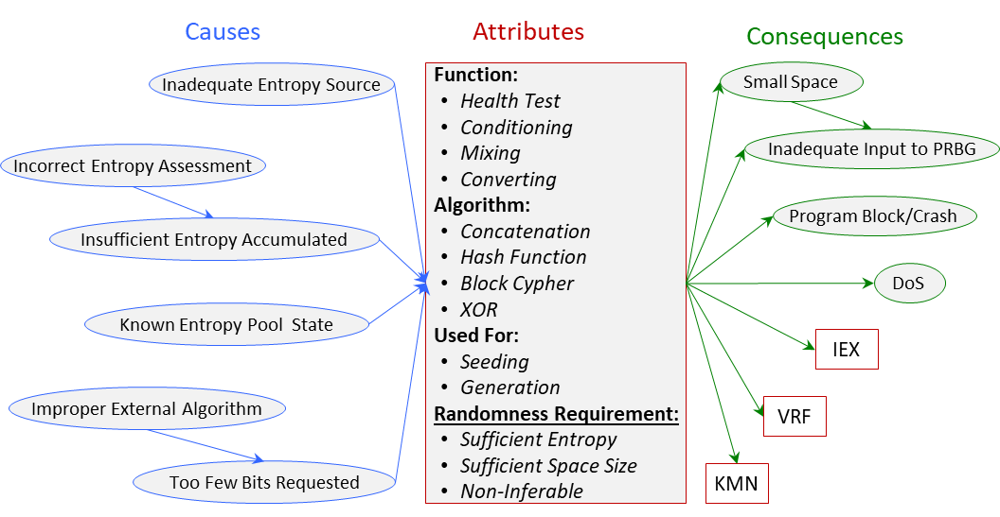

True-Random Number Generation Bugs (TRN) Class
Definition
The software generated output does not satisfy all use-specific true-randomness requirements.
Note that the output sequence is of random bits or numbers, where values are obtained from one or more sources of entropy.
TRN is related to: PRN, ENC, VRF, KMN, IEX (Information Exposure Bugs).
Taxonomy
The causes, attributes and consequences of the True-Random Number Bugs (TRN) class are depicted and explained below.

True Random-Number Bugs (TRN) class - click on image for detailed view.
Attributes
- Function - Health Test, Conditioning, Mixing, Output, Converting.
- Algorithm - Hash Function, Block Cipher, XOR, etc.
- Used For - Seeding, Generation.
This is what the output sequence is used for. It could be used as a seed for a PRNG or for generation of passwords or cryptographic keying material (keys, nonces).
- Randomness Requirement - Sufficient Entropy, Sufficient Space Size, Non-Inferable. This is the failed requirement.
Related CWEs and SFP
- CWEs related to TRN are
CWE-330,
CWE-331,
CWE-332,
CWE-333,
CWE-334,
CWE-337,
CWE-339,
CWE-340,
CWE-341,
CWE-342,
CWE-343.
- The only related SFP cluster is SFP Primary Cluster: Predictability.
Application
Application examples are provided here.